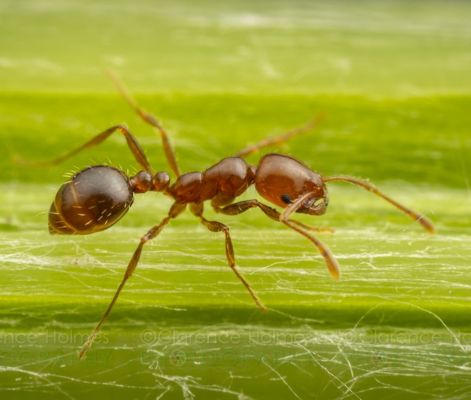

Sintomas da Formiga Lava Pés (Solenopsis)
Os sintomas no cão e no gato, podem variar de um indivíduo para outro. Seus sintomas podem levar a óbito
Humano
- Dor súbita
- Vermelhidão e inchaço que desaparecem em cerca de 45 minutos
- A formação de uma bolha cheia de pus
- Cerca de 2 ou 3 dias depois, a bolha se rompe e pode infeccionar
Cão
- Vômito ou diarreia
- Urticária
- Inflamação
- Fraqueza
- Dificuldades respiratórias
- Cor pálida ou roxa (cianose)
- Dor intensa
Gato
- Vermelho
- Dor no local da picada
- Inchaço